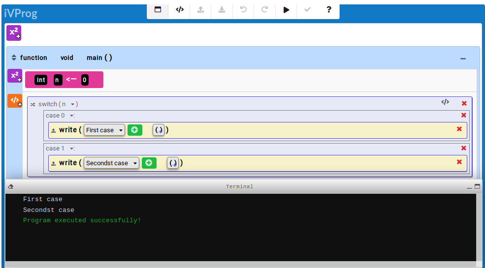

)")
Case
This contextual command is used to define the cases that must be analyzed by the program within a structure of multiple choice. note that without a command break execution takes place cascading from of the first true case. In the example below, both messages are displayed.

Fig. 1. Example of use 'switch-case'
Fig. 1. Example of use 'switch-case'